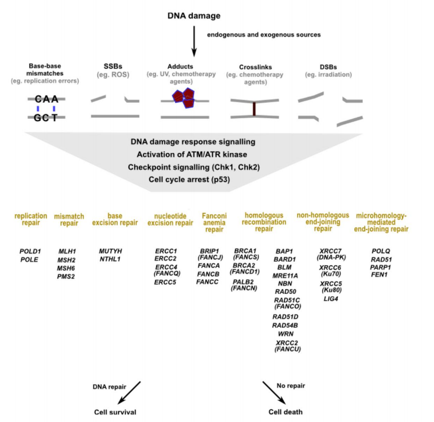
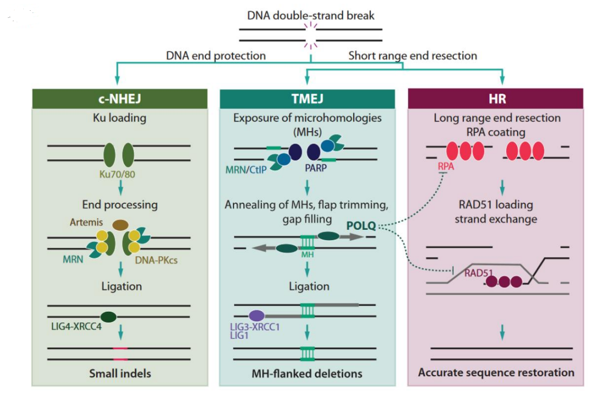
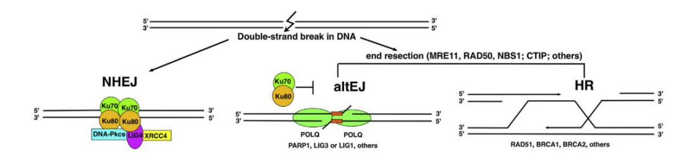
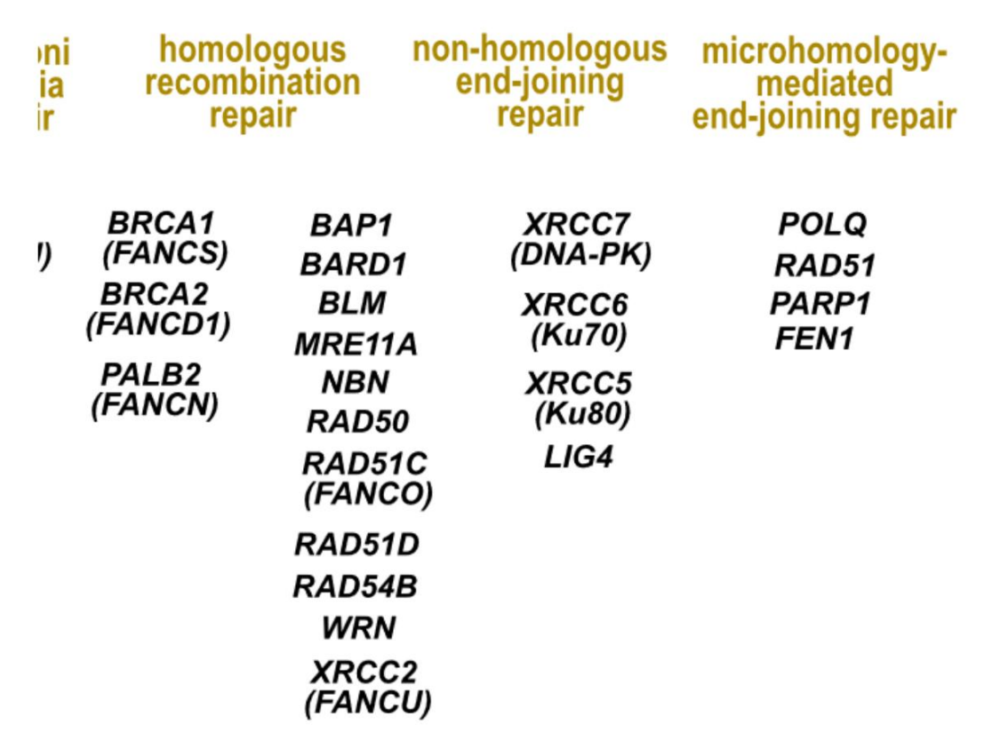

	<!DOCTYPE html>
	<html lang="zxx" class="no-js">
	<head>
		<!-- Mobile Specific Meta -->
		<meta name="viewport" content="width=device-width, initial-scale=1, shrink-to-fit=no">
		<!-- Favicon-->
		<link rel="shortcut icon" href="img/elements/fav.png">
		<!-- Author Meta -->
		<meta name="author" content="colorlib">
		<!-- Meta Description -->
		<meta name="description" content="">
		<!-- Meta Keyword -->
		<meta name="keywords" content="">
		<!-- meta character set -->
		<meta charset="UTF-8">
		<!-- Site Title -->
		<title>Seo</title>

		<link href="https://fonts.googleapis.com/css?family=Poppins:100,200,400,300,500,600,700" rel="stylesheet">
			<!--
			CSS
			============================================= -->
			<link rel="stylesheet" href="css/linearicons.css">
			<link rel="stylesheet" href="css/owl.carousel.css">
			<link rel="stylesheet" href="css/font-awesome.min.css">
			<link rel="stylesheet" href="css/nice-select.css">
			<link rel="stylesheet" href="css/magnific-popup.css">
			<link rel="stylesheet" href="css/bootstrap.css">
			<link rel="stylesheet" href="css/main.css">
		</head>
		<body>

			<!-- 头部列表 -->
			<header class="default-header">

				<nav class="navbar navbar-expand-lg  navbar-light">
					<div class="container">
							<a class="navbar-brand" href="index.html">
								
							</a>
							<button class="navbar-toggler" type="button" data-toggle="collapse" data-target="#navbarSupportedContent" aria-controls="navbarSupportedContent" aria-expanded="false" aria-label="Toggle navigation">
								<span class="navbar-toggler-icon"></span>
							</button>

							<!-- 列表 -->
							<div class="collapse navbar-collapse justify-content-end align-items-center" id="navbarSupportedContent">
								<ul class="navbar-nav">
									<li class="Home_page" href="index.html">
										<a class="Home_page_text" href="index.html">
											Home
										</a>
									</li>
									<li class="dropdown">
										<a class="dropdown-toggle" href="#" id="navbardrop" data-toggle="dropdown">
											Project
										</a>
										<div class="dropdown-menu">
											<a class="Background" href="Background.html">Background</a>
											<a class="Model" href="Model.html">Model</a>
											<a class="Supplementary" href="Supplementary.html">Supplementary</a>
											<a class="Report" href="Report.html">Report</a>
										</div>
									</li>
									<li class="dropdown">
										<a class="dropdown-toggle" href="#" id="navbardrop" data-toggle="dropdown">
											Documentation
										</a>
										<div class="dropdown-menu">
											<a class="dropdown-item" href="Protocols.html">Protocols</a>
										</div>
										<li class="dropdown">
											<a class="dropdown-toggle" href="#" id="navbardrop" data-toggle="dropdown">
												Team
											</a>
											<div class="dropdown-menu">
												<a class="dropdown-item" href="member.html">Members</a>
											</div>
										</li>
									</li>
								</ul>
							</div>
					</div>
				</nav>
			</header>
			<!-- 头部列表结束 -->
			<!-- Start banner Area -->
			<section class="generic-banner relative">
				<div class="container">
					<div class="row height align-items-center justify-content-center">
						<div class="col-lg-10">
							<div class="generic-banner-content">
								<h2 class="text-white">Background</h2>
							</div>
						</div>
					</div>
				</div>
			</section>
			<!-- End banner Area -->

			<!-- Start Sample Area -->
			<section class="sample-text-area">
				<div class="container">
					<h3 class="text-heading">DNA damage, repair and mutation</h3>
					<p class="sample-text" style="font-size:25px;color:black">
						We know that DNA is the main genetic material of an organism and carries vital genetic information. However, similar to other biological macromolecules, the structure of DNA may be
						damaged under the action of various factors inside and outside the body.There are 2 types of DNA damage  :base damage(Base shedding, base conversion, base modification, base modification, base cross-linking, base mismatch, etc.)
						and chain damage (Incorporation of ribonucleotides, DNA strand breaks, cross-linking of DNA strands, cross-linking between DNA and proteins)
						<br>
						<br>
						DNA is the only molecule that has the potential to be fully repaired after damage. Various types of damage activate DNA damage response signals, amplified by checkpoint kinases, to determine
whether to repair the damage or enter the process of apoptosis.

Different types of damage repairs have specific ways to complete, and some have multiple feasible ways. The figure below shows the main types of DNA damage and repair mechanisms, and the
genes associated with these mechanisms.

However, not all damage that occurs to DNA molecules can be repaired under all circumstances. DNA that is not repaired in time not only affects processes such as replication and
transcription, but can also lead to mutations in the body, sometimes with fatal consequences.
					</p>
				</div>
			</section>
			<!-- End Sample Area -->
			<!-- Start Sample Area -->
			<section class="sample-text-area">
				<div class="container">
					<h3 class="text-heading">DNA double-strand break</h3>
					<p class="sample-text" style="font-size:25px;color:black">
						This is one of the most severe forms of DNA damage. This kind of damage is difficult to repair and often induces cell apoptosis. It can be caused by ion rays and certain chemical
	agents, and the principle of tumor radiotherapy lies in this.
	<br>
	<br>
	However, cells also have repair pathways for this. There are mainly three ways
</p>
		<h3 class="mb-20">three ways of repair pathways</h3>
		<div class="">
			<ol class="ordered-list">
				<li style="font-size:25px;color:black"><span style="font-size:25px;color:black">Homologous recombination repair </span></li>
				<p class="sample-text" style="font-size:25px;color:black">
					Homologous recombination HR repair pathway is highly dependent on cell cycle progression. In the G1 phase, when the number of chromosome sets is 2n, the
homologous chromosome is the only template available for HR. Wait until there is a sister chromatin in S phase/G2 phase chromatid), the number of chromosome sets
is multiplied to 4n. At this time, the HR mechanism has more repair templates to choose from. Therefore, it is generally believed that the operation of HR repair is in the S phase.
/ G2 phase is more active.
</p>
<li style="font-size:25px;color:black"><span style="font-size:25px;color:black">Non-homologous end joining repair (NHEJ) </span></li>
<p class="sample-text" style="font-size:25px;color:black">
	The biggest difference between the NHEJ repair mechanism and the previous HR is that it does not require the help of any template . With help, rejoin
the two broken strands.
</p>
<li style="font-size:25px;color:black"><span style="font-size:25px;color:black">Microhomology-mediated end joining (MMEJ) </span></li>
<p class="sample-text" style="font-size:25px;color:black">
	MMEJ is completely independent of canonical NHEJ and does not depend on NHEJ core factors. Use microhomologous sequences to join the double-strand break.
Features low fidelity.
<br>
<br>
Also called TMEJ (polymerase theta-mediated end joining), which means mediated by the DNA polymerase theta. This will be the subject of our
research.
<br>
<br>
alt-EJ (alternative nonhomologous end-joining) also refers to it. Some cells lack NHEJ and HR-related genes, and MMEJ is the only DNA doublestrand break repair method that can be used. But it was later shown that some cell lines that were not deficient in NHEJ also had it predominant.
</p>
<p class="sample-text" style="font-size:25px;color:black">
	Compared with normal cells, the DNA activity of tumor cells is abnormally active. In addition, there are also radiotherapy and chemotherapy methods for tumor
	DNA. These factors cause genes related to DNA damage repair, especially double-strand break repair, to be overexpressed in tumor cells. These repair
	pathways can make the tumor resistant and prone to introducing more mutations that make the tumor worse.
	<br>
	<br>
	However, the specific repair pathway used is related to the germline of the cell, environmental factors, etc. In some cancer cell lines, genes associated with
	some pathways are missing. For example, half of ovarian cancer cells lack HR-related genes. Such phenomena provide more possibilities for precision medicine
	and drug research and development . The review  (https://doi.org/10.1016/j.ctrv.2021.102337) discusses this issue
</p>



			</ol>
		</div>


					</p>
				</div>
			</section>
			<!-- End Sample Area -->
			<!-- Start Sample Area -->
			<section class="sample-text-area">
				<div class="container">
					<h3 class="text-heading">DNA polymerase theta (DNA polymerase theta, POLQ, pol theta)</h3>
					<p class="sample-text" style="font-size:25px;color:black">
						Query and presentation points: DNA polymerase ÿ, English is DNA polymerase theta, which can be abbreviated as pol ÿ or POLQ. (If you plan to write out the word "polymerase", you
	need to write it in full. The preceding "DNA" and the following ÿ (theta) cannot be omitted. The corresponding gene that encodes it is POLQ. Letters need to be all capitalized and
	italicized. Protein names are not italicized.)
	<br>
	<br>
	This is the target molecule we chose, which is essentially a protein. It is the core enzyme of the MMEJ pathway.
	
	<br>
	<br>
	On the one hand, it maintains the stability of the body's genome, maintains chromosomal stability, and reduces cell apoptosis caused by DNA double-strand breaks; on the other
	hand, it introduces many errors during repair, often introducing unfavorable mutations, increasing the risk of tumor development.
	<br>
	<br>
	In tumor cells, POLQ is frequently overexpressed. Its higher expression level is positively correlated with the poor prognosis of tumors. Recent studies have shown its potential as an
	anti- tumor target (the two images cited above are from two reviews of POLQ as a cancer target https://doi.org/10.1016/j.tr ecan.2020.09.007, http://dx.doi.org/10.1016/j.dnarep.2016.05.003)
	In addition, its inhibitors also have the potential to work together with radiotherapy. Cells with suppressed POLQ were more sensitive to radiation. By inhibiting POLQ, the

	dose of radiation can be reduced, thereby reducing damage to normal tissues.
	<br>
	<br>
	Our project intends to conduct a discovery study of POLQ inhibitors. The specific research methods are not discussed in this paper.
</p>

		</div>


					</p>
				</div>
			</section>
			<!-- End Sample Area -->


			<script src="js/vendor/jquery-2.2.4.min.js"></script>
			<script src="https://cdnjs.cloudflare.com/ajax/libs/popper.js/1.11.0/umd/popper.min.js" integrity="sha384-b/U6ypiBEHpOf/4+1nzFpr53nxSS+GLCkfwBdFNTxtclqqenISfwAzpKaMNFNmj4" crossorigin="anonymous"></script>
			<script src="js/vendor/bootstrap.min.js"></script>
			<script src="js/owl.carousel.min.js"></script>
			<script src="js/jquery.sticky.js"></script>
			<script src="js/jquery.nice-select.min.js"></script>
			<script src="js/parallax.min.js"></script>
			<script src="js/jquery.magnific-popup.min.js"></script>
			<script src="js/main.js"></script>
		</body>
	</html>
